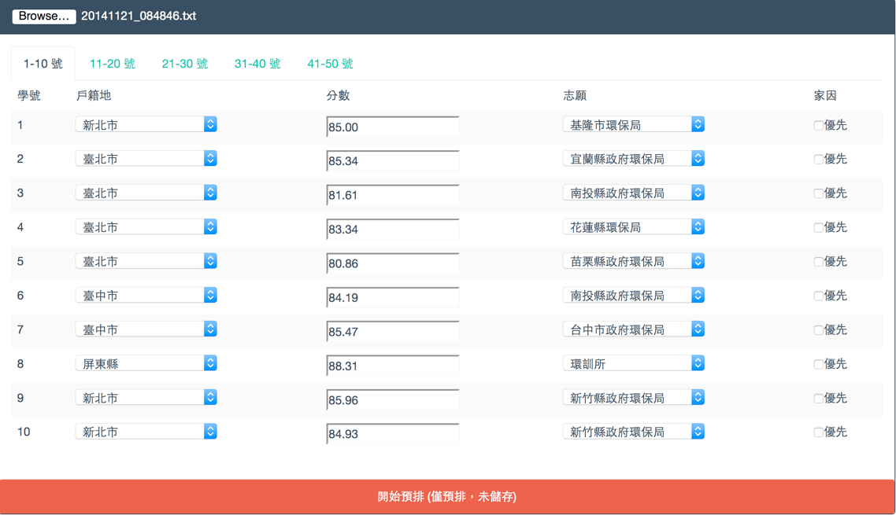
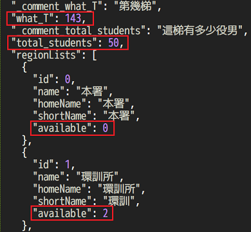
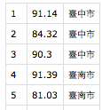
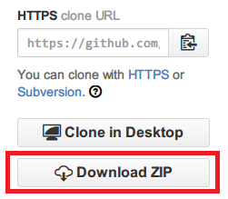
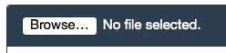

EPA SMS Dispatcher

This is a simple system for Environmental Protection Agency to dispatch its Substitute Military Service personnel.
Although this system is designed for EPA, it can be easily modified to fit other departments as well.
Demo
步驟
- 事前準備，修改役男人數、各縣市名額等參數
- 整理役男名單，並彙整成此系統可接受的格式
- 開始預排
- 儲存並列印預排之結果
步驟說明
（一）修改參數
- 依照這一梯的役男總人數修改 region.json 的 total_students 欄位
- 依照這一梯各縣市的名額修改 region.json 的 available 欄位 
（二）外部匯入資料之格式
除了手動輸入外，也可以從檔案直接匯入資料。 外部匯入的資料必須符合下列格式：
- 必須是以 UTF-8 編碼儲存的 csv 檔案。
- csv 表格內總共三欄，第一欄為號碼、第二欄為戶籍地、第三欄為分數。如圖片：
若需範例，請參考 demo 資料夾內的 csv 檔案。
Please make sure the input file is encoded with UTF-8 (without BOM)
＠微軟使用者注意事項
Microsoft Office Excel 預設是以 Big5 編碼儲存檔案，因此我們存檔時必須手動選擇 UTF-8 編碼，步驟如下：
- 另存新檔案 -> 選擇 csv
- 選擇工具 -> 網路選項
- 選擇編碼 -> 選擇 UTF-8 編碼
- 儲存檔案
（三）開始預排
- 開啟 Firefox 瀏覽器，若尚未安裝可以由此下載
- 從 github 下載，解壓縮後開啟 index.html 
- 點選左上角的瀏覽按鈕，讀取之前的 csv 或是 txt 檔案當作範例，並按下下方的開始預排 
以此範例向役男講解本系統：
- 平均分數
- 區域名額與加減人數
- 上方顏色說明（分發規則說明）
- 尚未分配到的學號、點選可自動搜尋最佳落點

接著講解預排的規則、正式分發的步驟
- 被點到號碼的役男請大聲說出自己的志願
- 當切換到自己所屬的頁面時，請檢查自己的戶籍地與成績是否正確
- 每回合結束後，會有三到五分鐘討論時間
- 告知預排截止時間
- 講解正式分發時的規則
- 詢問是否有不懂分發規則的，或有其他疑問
接下來開始正式預排
- 重新整理頁面，並讀取這梯的 csv 或是 txt 檔
- 第一輪：一個一個叫號碼，選擇志願。家因優先者若戶籍地沒開缺額，可以優先選擇戶籍地周圍縣市
- 存擋、看預排結果、討論
- 第二輪：一到十號想修改志願的舉手，依此類推
- 存擋、看預排結果、討論
- 第三輪之後，想修改的直接舉手
- 當尚未分配到的人數越來越少時，可以直接點選其號碼，系統會提示這個號碼還剩哪些地方可以選擇
請記得每次按下預排按鈕前都先存擋（txt檔），以避免突發狀況造成資料流失、影響預排時間。
預排結束後，可讓役男們拍照留念，也可截圖備份，並按下右下角輸出表格。
其他設定
js/global.js 內的 printRound_N 可以改變預排結果的縣市欄位中，顯示幾筆資料後才換行
printRound_N = 3; // 每三筆資料就換行

printRound_N = 6; // 每六筆資料才換行
js/global.js 內的 fontColors{} 可以改變不同階段錄取的顏色
使用不同顏色來代表 不同階段錄取 的役男
fontColors = {
type1 : "black", // 第一階段錄取（分數大於均標，戶籍地）
type2 : "#229922", // 第二階段錄取（分數大於均標，非戶籍地）
type3 : "#0000dd", // 第三階段錄取（分數低於均標，戶籍地）
type4 : "#4488ff", // 第四階段錄取（分數低於均標，非戶籍地）
// typeDefault : "black", // 預設顏色
typeHome : "orange", // 家因顏色
typeKicked : "red", // 選某個地區時，被擠掉的人的顏色
leftOver : "red", // 本回合結束後，尚未分配到服勤單位的顏色
shortage : "blue", // 地區人數短缺時的顏色
overheat : "red" // 地區人數過多時的顏色
};
Note
Actually, the offilne version can save data in the browser's storage. But most employees prefer txt files.
Todo Lists
- 增加 “全部清除” 按鈕 (F5)
- 要印給輔導組，照號碼排
- 123456789123
- 裝 firefox, notepad++, D碟不會自動回復
- Tutorial pages with screenshots
- Chrome modification.
- https://stackoverflow.com/questions/2541949/problems-with-jquery-getjson-using-local-files-in-chrome
- MAC: open /Applications/Google\ Chrome.app --args --allow-file-access-from-files
- http://eureka.ykyuen.info/2013/09/24/chrome-bypass-access-control-allow-origin-on-local-file-system/
License
This project is licensed under the terms of the MIT license.
Please note that this project is built with materials from the following parties:
Please also refer to their Licenses for further information.